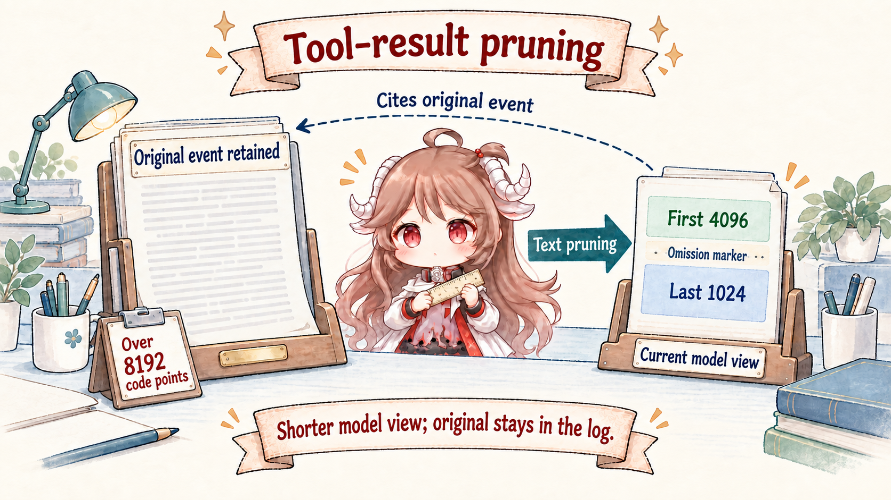
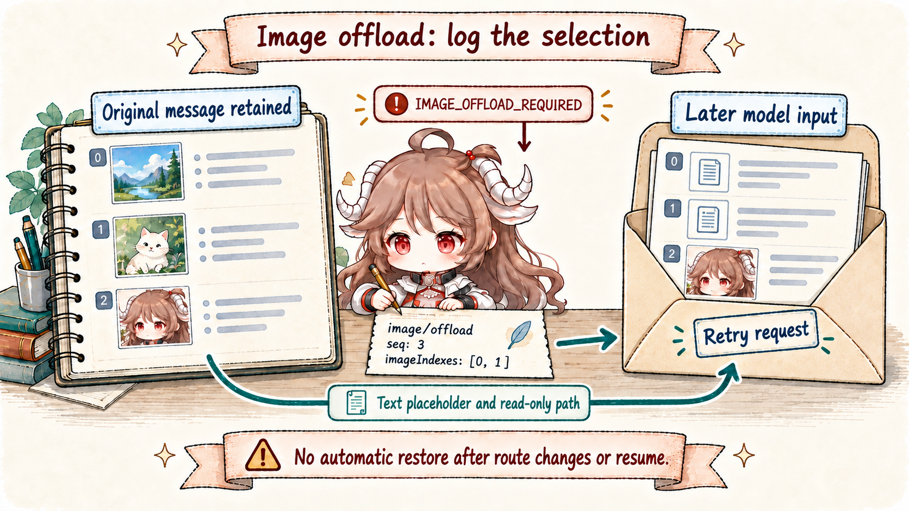
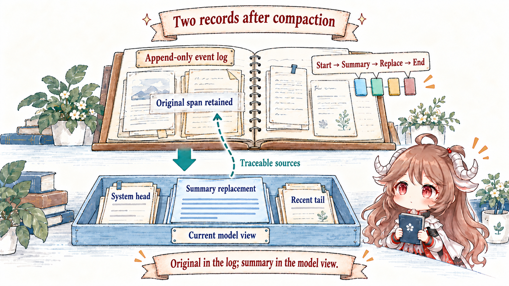
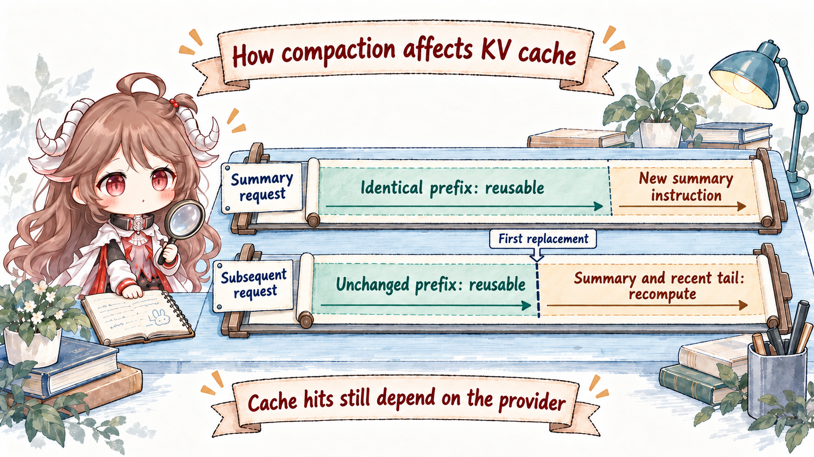
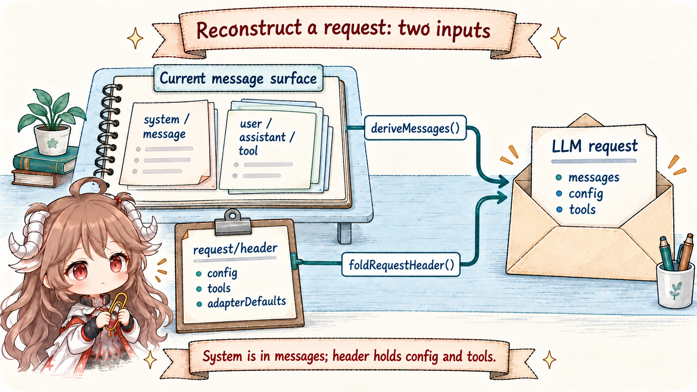

“Summarize when context gets long” hides four separate problems: which request gets priced; where a range can be cut without splitting tool call/result pairs; whether a summary appends or replaces; and how system text, tools, provider config, and session prefix return after restoration. Solving only the first yields a prompt trick, not a runtime protocol.
DSH makes compaction an auditable state transition. ctx.tokenMeter prices the actual request envelope and current surface. A pruner may address pure bulk first. The compaction backend opens a bracket in the log, and one sourced user/message replacement commits each successful summary.
Reading contract.After this chapter, you should be able to explain what 0.8 and 0.16 control; why a below-pressure step must not opportunistically prune; why ranges use surface position rather than numeric seq; how the summary request reuses old KV cache while a future request invalidates it; and which reconstruction job belongs to raw log, current surface, and request/header.
Evidence boundary.This chapter is pinned to ddefc45. The defaults belong to compaction-basic, not the permanent seam contract. Provider capacity, usage, and KV-cache billing remain adapter reports. Source relationships can validate a replacement; they cannot prove that a generated summary retained every business fact.
1. Price the complete request before deciding to compact
1.1 Pressure is not messages.length
BasicCompactionEngine reads the latest canonical logged envelope and current surface at the same consumed-log revision. Measurement therefore covers system prompt, tool schemas, routing, assistant completion, tool results, and context or steering already admitted to the log—not just conversation strings.
Capacity comes from the adapter owning the latest durable provider/model route. thresholdRatio: 0.8 triggers at 80% of its window; retainRatio: 0.16 reserves a token budget equal to 16% of that window, not 16% of message count. Exact routes may override policy. Missing capacity makes explicit pressure checks throw; the automatic pre-step listener warns once per target and continues with full history. Provider-confirmed canonical overflow can still attempt reduction. Image nodes use route-declared image pricing, while logged replacement shadow prices retain the fixed heuristic; these figures serve different purposes.
1.2 Select only whole, balanced, replaceable surface units
Range selection starts at the oldest non-system-head nodes, reserves a recent tail, and uses the tool-pairing boundary helpers so no unanswered call crosses a cut. A system/message at surface position 0 never enters the compacted range; later system updates are compactable history. Turn boundaries do not protect old steps in one runaway turn. An open indivisible tail instead makes compaction decline until it closes.
A range is a surface-position span, not a numeric seq interval. After replacement, the new high-seq event occupies the shadowed range's old position. Later compaction must read current membership, not infer it from start <= seq <= end.
2. Apply model-free pruning before paying for summarization
2.1 The tool-result pruner changes only the model surface

ctx.toolResultPruner acts when text blocks exceed 8192 Unicode code points by default, retaining 4096 at the head, a fixed marker, and 1024 at the tail. Non-text blocks keep relative order. Slicing never splits a UTF-16 surrogate pair, though it may split a grapheme cluster.
The new tool/result copies original data except content and replaces the old surface node. Its sourceEventSeqs: [originalSeq] cite the replaced result. Pruning reads that node's current message projection, so previously logged image-offload marks remain in the replacement content. Each replacement is immediately preceded by compaction/prune, recording the shadowed node and heuristic token price so the metering projection can subtract the old price. The original event remains in the append-only log. New text is strictly smaller and within threshold, so another scan does not trim it again.
2.2 Pruning is pressure-qualified, not background housekeeping
A below-pressure step check never prunes. Once pressure or canonical overflow qualifies, the basic backend invokes the optional pruner and remeasures through the token meter. If the request is now safe, it skips summarization. Cheap deterministic shrink comes first without invalidating a reusable prefix merely because a result “looks large.”
A character budget is not a token budget. Surface compaction cannot fix a tool unit whose non-text or non-prunable remainder is still too large, or an envelope where system and tools alone approach the window.
2.3 Image-budget overflow has its own offload event

A tool result can contain only a few hundred characters but several costly images; text pruning cannot resolve that pressure. The image-offload plugin handles only IMAGE_OFFLOAD_REQUIRED carrying an offloadImages count. It walks the failed request in message order, selecting the oldest user/tool input images while skipping assistant output and already-offloaded occurrences. An image/offload event stores message seqs and depth-first image indexes.
// Shape-level example: select the first image of current message node 42
{ type: 'image/offload', data: { targets: [{ seq: 42, imageIndexes: [0] }] } }
// Later requests: attachment name and available read-only path replace the image
// Original message events and surface node identities stay unchangedThis path creates no replacement node. Message projection marks selected images, the adapter sends text placeholders, and token measurement follows the same selections. The agent logs a fresh request/header and retries without spending provider retry budget or emitting llm/retry. A larger route, resume, or later compaction never automatically restores an old occurrence; reading the attachment again creates a new one. The cost is an initial adapter rejection, and cache reuse ends at the first changed message.
3. A successful summary commits one region replacement
3.1 A five-step bracket ties source, replacement, and lock together

compaction/startappends synchronously and acquires the log-recorded lock.- The backend creates a summary and revalidates that the selected span has not drifted.
compaction/summaryrecords raw summary, range, shadowed seqs, token measurement, summary-call target, and usage; it is log-only.- One
user/messagecarries checkpoint content,compactCheckpointSource(compactionId), andsurfaceOp: replace. ItssourceEventSeqscite start, summary, and every shadowed seq in that order. This is the summary commit's only surface replacement. compaction/endreleases the lock last.
The next model request retains the system head and sees one <compacted-summary> checkpoint followed by the recent tail. Human transcript and exact audit still read old append-origin events. The summary is not appended as a second history copy, and compaction/* never enters the model surface.
3.2 Convergence and changed spans fail explicitly
The basic backend rejects a summary that is not smaller than its source. After a successful reduction, continued pressure may trigger extra checkpoint compactions under compactionRetries, throwing when exhausted. The automatic pre-step listener catches operational failures, warns, and continues the turn. Canonical overflow recovery permits a retry only after replacement generation advances; pruning that lands before a later summary failure can satisfy that requirement. Without reduction progress, the original provider error remains authoritative.
Failed summary requests also reach synchronous compaction/summary-error. Image offload selects only occurrences inside that summary region; once recorded, the backend re-derives and re-prices the input before retrying inside the same bracket. Those omissions remain if later work fails or is cancelled. Thus “no summary replacement committed” does not mean “model-visible input stayed unchanged.” Unrelated span drift rejects a stale summary; a failed bracket close still leaves an orphan start blocking the current lifecycle.
4. Summarization and future requests move cache in opposite directions
4.1 The summarizer replays the old prefix; only its final instruction is new

The default summarizer calls ctx.llm.stream() directly: it derives the system message from surface position 0, follows it with the shadowed-region messages, carries tools from the latest request/header, and appends the compaction instruction. The system head stays outside replacement; an empty head emits no wire message. An identical route and prefix allow provider cache reuse, subject to the provider's cache contract; local replay cannot guarantee a hit. A different route, a non-head span, or image offload may reduce reuse.
The call sets purpose: 'compaction' without changing the model-visible body. Only returned text enters the checkpoint. Reasoning and tool calls are excluded, while image output fails with UNSUPPORTED_CONTENT instead of producing an orphan or disappearing silently.
4.2 Replacement invalidates future requests from the first changed token
A future conversation request may reuse system, tools, and unchanged history before the replacement. From the first shadowed token onward, the old cache no longer matches, so checkpoint and recent tail are recomputed. An append-only audit log does not imply unchanged request bytes; KV cache follows the model surface.
5. System messages and request headers reconstruct different inputs
5.1 System now belongs to the derived message sequence

deriveMessages() now derives system, user, assistant, and tool messages. The system prompt comes from system/message, normally with surface position 0 as the stable head; routes supporting in-history updates may also see later system messages. request/header contains only config, adapterDefaults, and tools. System text no longer comes from header.system.
foldRequestHeader() still chooses the last full snapshot in a log prefix. Empty tools canonicalize to absence, and schemas compare in order. Alongside initial, resume, and change, the reason includes series: surface replacement or an explicit new message series records a boundary even when config/tools are unchanged; a simultaneous header change carries startsSeries. Reconstruction combines derived messages with the header and restores registered message projections such as image/offload, rather than simply concatenating old text.
5.2 end-seed distinguishes a live lock from old crash evidence
The latest unmatched compaction/start after the newest session/end-seed belongs to this lifecycle and returns busy. A start before that boundary is stale evidence from a prior process and does not block. Because the lock lives in the log rather than a WeakSet, restoration has evidence for this decision.
6. Engineering consequences of the protocol
- Do not implement compaction as deletion.Shadow model surface; audit, recovery, and human history still need old facts.
- Measure the envelope before history.No number of summaries fixes a system prompt or schema set that already fills the window.
- Prefer deterministic pruning first.It may avoid a model call, but the automatic pressure path must first qualify pressure and remeasure after pruning.
- Require provenance on replacement.A checkpoint without compactionId and sourceEventSeqs cannot prove what it displaced.
- Judge cache by request bytes.Append-only logging does not mean model cache remains valid forever.
- Summaries are lossy.Relations can be valid while semantics are incomplete; critical workflows should rely on structured state and external facts. Image offload is also a durable lossy choice; a larger route does not restore old occurrences.
Part VI turns to multiple agents: how spawn, fork, workflows, and the Ralph loop share one SubagentRuntime while bounding session lineage, tool scope, concurrency, and delegation depth.
Source references
- compaction-basic README and region transaction: pressure, retention, summary replay, transaction, and overflow recovery.
- compaction seam README: service boundary, tool pairing, surface contract, and durable bracket.
- tool-result-pruner README: code-point budgets, content-only replacement, and limitations.
- request-header.ts and the Session README: envelope reconstruction, surface replacement, and KV-cache semantics.
- image-offload recovery / offloadOldestImages: image selection, durable projection, and both retry entry points.